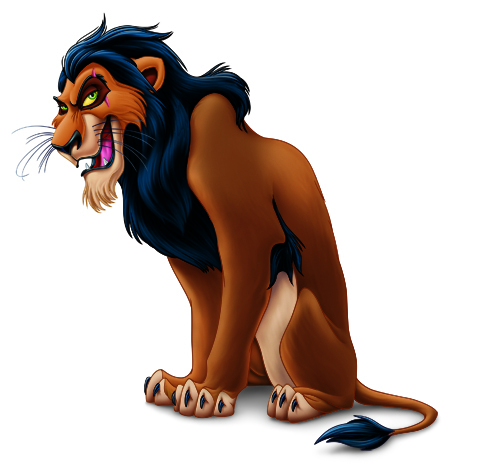
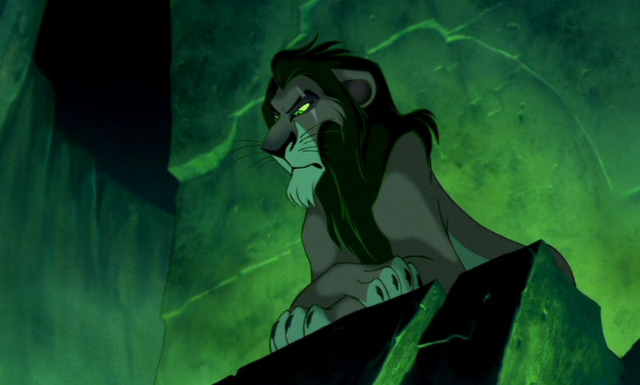
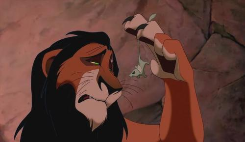
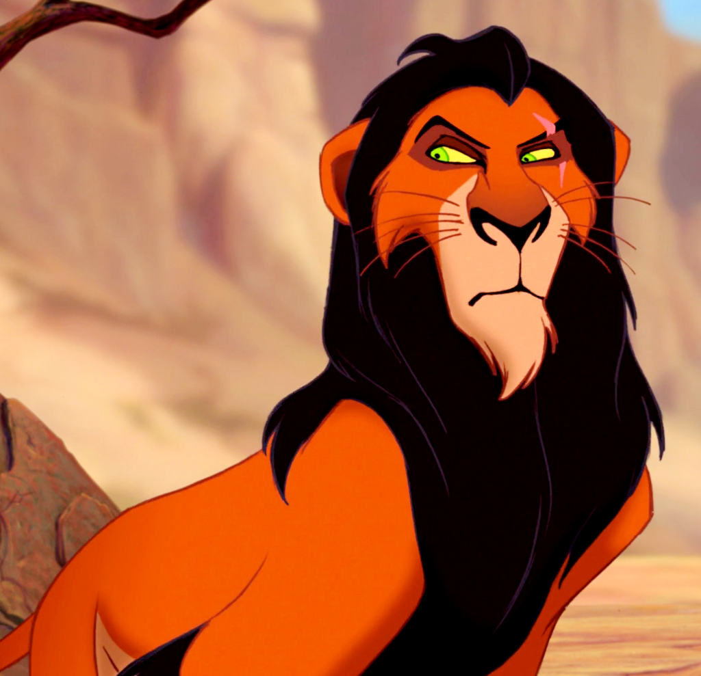

Scar
Navigation
Scar ist hier ein Gegenspieler und der Hauptantagonist des Hauptcharakters Simba. Er ist eifersüchtig auf Mufasa, dem derzeitgen König, und dessen Thronfolger Simba. Er möchte selbst König werden, aber durch Simbas Geburt wurde ihm seine letzte Chance auf den Thron vereitelt.
Er lockt den kleinen Simba in eine Schlucht und bittet ihn dort auf Mufasa zu warten, da dieser angeblich eine Überraschung für ihn hat. Während Simba nichtsahnend in der Schlucht verweilt, befiehlt Scar den Hyänen eine Gnuherde anzugreifen und diese somit durch die Schlucht zu treiben. Simba kann sich auf einen Baum retten, um nicht von den panischen Tieren zertrampelt zu werden. Währenddessen informiert Scar seinen Bruder über Simbas Schwierigkeiten und führt ihn zur Schlucht. Todesmutig kämpft sich Mufasa durch die Herde und kann Simba in Sicherheit bringen.
Als Mufasa aber selbst die Felswand hinaufklettern will und Scar bittet ihm zu helfen, stößt dieser ihn hinunter.
  Familie
Mufasa (Bruder)
Sarabi (Schwägerin)
Simba (Neffe)
Zira (Ehefrau)
Nuka (Sohn)
Eigenschaften
| Name | Scar |
| Spezies | Löwe |
| Geschlecht | Männlich |
| Mähne | Schwarz |
| Typ der Gestalt | Negativ |
| Charakter | Böse, listig, bösartig, egoistisch, grausam, eifersüchtig, neidisch |
| Aussehen | Ein sehniger leichtfüßiger Löwe, dünne schwarze Mähne, grell-grüne Augen, eine Narbe am linken Auge |
| Ziel | Mufasa töten, Simba töten, im Geweihten Land herrschen |
| Kräfte und Fähigkeiten | Listigkeit, Bösartigkeit |
| Waffe | Fangzähne und Krallen |
| Schicksal | Von eigenen Mitläufer getötet |
Video
https://www.youtube.com/embed/EC9Pkz9dPMU